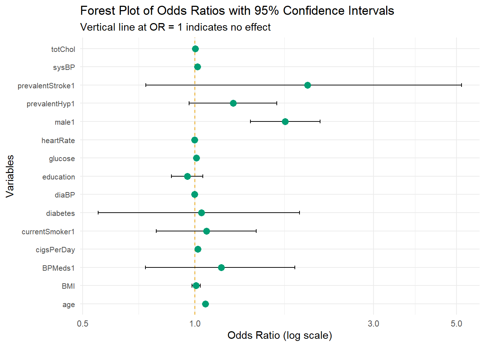
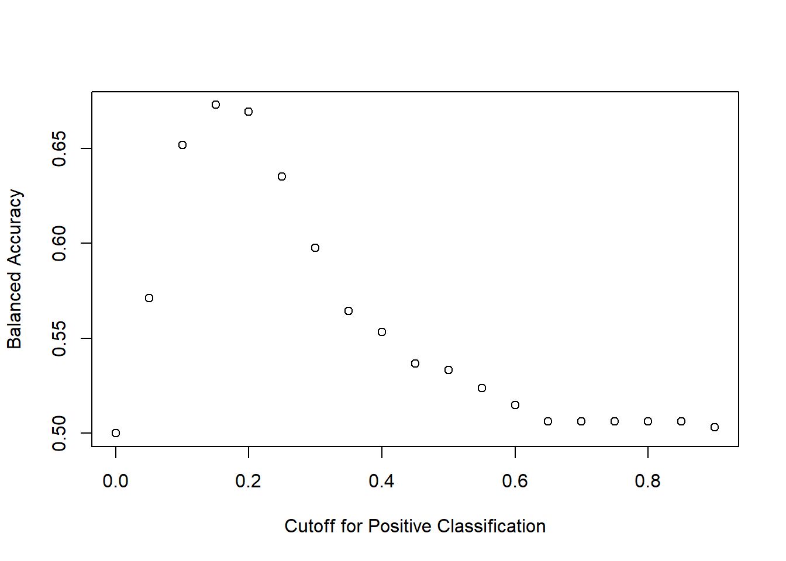
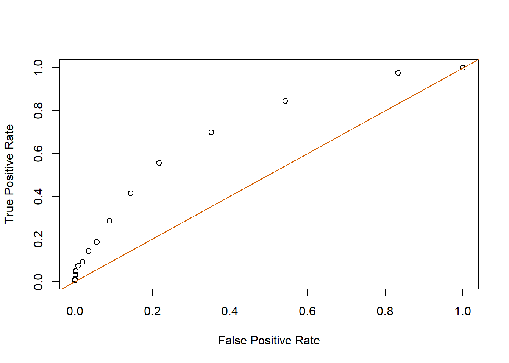

library(tidyverse)
framingham = read_csv("https://raw.githubusercontent.com/jmayberr/math133-stat-learning-fall2026/refs/heads/main/Datasets/framingham.csv") |>
mutate(across(c("male","currentSmoker","BPMeds","prevalentStroke","prevalentHyp"), as.factor)) |>
drop_na()
chd_glm = glm(TenYearCHD ~ ., data = framingham, family = "binomial")
summary(chd_glm)Module 2.3: Evaluating Classification Models
Introduction
In these notes we’ll be give a more detailed look at the framingham model from the practice problem at the end of the last notes. Please take some time to investigate it on your own first before ruining the surprise.
We’ll start off with a few additional words abotu interpreting coefficients and then proceed to enrich our understanding of “accuracy” by examining false positive vs false negatives, working towards a better metric of balanced accuracy and a more nuanced picture of how well our models fit classification data.
Interpreting Coefficients
The coefficients in a logistic regression model are on the log-odds scale, which makes them difficult to interpret directly. Exponentiating them gives us odds ratios, which are easier to describe
For example, we can ask: how much more likely are males to develop CHD compared to females? For this, we use the coefficient of “male1” from our model above and exponentiate the result
exp(coef(chd_glm)["male1"]) male1
1.742111 This tells us that Males are about 1.74 as likely to get CHD as females if we hold all other variables constant. It is common to express this as a percentage by subtracting 1 from the above result and multiplying by 100:
sprintf("The odds of getting CHD are %.0f%% higher for males compared to females",
(exp(coef(chd_glm)["male1"]) - 1) * 100)[1] "The odds of getting CHD are 74% higher for males compared to females"We can also ask about the impact of reducing cigarette consumption. Suppose for example we want to know what happens if we reduce cigaratte consumption by 20 per day. This leads to teh following change in odds of developing CHD:
exp(-20 * coef(chd_glm)["cigsPerDay"])cigsPerDay
0.6986635 Notice this time the answer is less than 1 so to express as a percentage, subtract the number from 1 and multiply by 100:
sprintf("The odds of getting CHD decrease by %.0f%% if cigs per day decreases by 20",
(1 - exp(-20 * coef(chd_glm)["cigsPerDay"])) * 100)[1] "The odds of getting CHD decrease by 30% if cigs per day decreases by 20"A useful way to visualize all the odds ratios and their uncertainty simultaneously is a forest plot. To make this plot, we first need to convert the output of our model into a “tidy” format where each row is a predictor variable and each column is a different attribute of the model fit:
library(broom)
tidy_model = tidy(chd_glm, conf.int = TRUE, exponentiate = TRUE)
head(tidy_model)# A tibble: 6 × 7
term estimate std.error statistic p.value conf.low conf.high
<chr> <dbl> <dbl> <dbl> <dbl> <dbl> <dbl>
1 (Intercept) 0.000243 0.715 -11.6 2.84e-31 0.0000591 0.000977
2 male1 1.74 0.109 5.09 3.57e- 7 1.41 2.16
3 age 1.07 0.00668 9.50 2.12e-21 1.05 1.08
4 education 0.954 0.0494 -0.962 3.36e- 1 0.865 1.05
5 currentSmoker1 1.07 0.157 0.452 6.51e- 1 0.788 1.46
6 cigsPerDay 1.02 0.00624 2.87 4.05e- 3 1.01 1.03 Then we plot the predictors vs their corresponding coefficient estimates with confidence intervals:
tidy_model[-1,] |>
ggplot( aes(x = estimate, y = term)) +
geom_vline(xintercept = 1, linetype = "dashed", color = "#E69F00") +
geom_errorbarh(aes(xmin = conf.low, xmax = conf.high), height = 0.2) +
geom_point(size = 3, color = "#009E73") +
scale_x_log10() +
labs(x = "Odds Ratio (log scale)",
y = "Variables",
title = "Forest Plot of Odds Ratios with 95% Confidence Intervals",
subtitle = "Vertical line at OR = 1 indicates no effect") +
theme_minimal() +
theme(axis.text.y = element_text(size = 8))
Each point is the estimated odds ratio for that predictor and the horizontal bars show the 95% confidence interval. Predictors whose confidence intervals cross the vertical line at 1 are not significantly associated with CHD.
The Confusion Matrix and Classification Metrics
Before we dive into evaluating our logistic regression model, we need to develop better tools for measuring classification performance. So far we have been using accuracy as our metric for classification performance. However, accuracy alone can be misleading, especially when the classes are imbalanced. To see why, let’s start with a motivating example.
A Medical Testing Example
Suppose these is a town of 10,000 people where about 3% have had COVID-19. A particular antibody test has:
- A 93.8% chance of correctly detecting antibodies in someone who has had COVID (this is called recall or sensitivity or true positive rate1)
- A 95.6% chance of correctly showing no antibodies in someone who hasn’t had COVID (this is called specificity or true negative rate)
We can organize the results of testing everyone in town into a confusion matrix where the rows tell the truth and the columns tell us the predictions2
| Test Positive | Test Negative | |
|---|---|---|
| Actually COVID | 282 | 18 |
| Actually No COVID | 388 | 9312 |
From this table we can compute several metrics:
Accuracy — what fraction of all predictions were correct? \[accuracy = \frac{282 + 9312}{10000} = 0.959\]
Looks pretty good! But let’s dig deeper.
Recall — what is the probability of testing positive given that you actually have the disease? \[recall = \frac{282}{282 + 18} = 0.938\]
Specificity — what is the probability of testing negative given that you actually don’t have the disease? \[specificity = \frac{9312}{9312 + 388} = 0.960\]
Balanced Accuracy — the average of sensitivity and specificity: \[balanced\ accuracy = \frac{0.938 + 0.960}{2} = 0.949\]
Precision (Positive Predictive Value) — what is the probability that you actually have the disease given that you tested positive? \[precision = \frac{282}{282 + 388} = 0.421\]
Notice something alarming: even though accuracy is 95.9%, if you test positive there is only a 42% chance you actually have COVID! This happens because the disease is rare - most positive tests are false positives from the large pool of healthy people. This is why accuracy alone is misleading for imbalanced problems.
Precision vs Recall Tradeoff
Here’s an intuitive way to think about the tension between precision and recall. Suppose I show you 10 cards and then shuffle them into a deck of 100. I go through each card and ask if it was one of the ones you saw:
- If you always say “Yes”, your recall will be 100% — you’ll never miss a card you saw. But your precision will be terrible since you’re also saying yes to 90 cards you never saw.
- If you only say “Yes” when you’re completely certain, your precision will be high but you’ll miss many cards you actually saw.
This tradeoff appears constantly in classification problems (eg. spam filters, medical tests, fraud detection) and is one of the reasons we need multiple metrics rather than just accuracy.
Which Metric Should We Use?
It depends on the problem:
- Medical diagnosis — recall (sensitivity) is usually more important since missing a true case (false negative) is more costly than a false alarm (where you can always do additional testing to rule it out)
- Spam detection — precision matters more since falsely flagging legitimate emails is more annoying than letting some spam through
- Balanced accuracy is a good default when you want to treat both types of errors equally, especially for imbalanced classes
With this framework in place, let’s now evaluate our logistic regression model on the Framingham heart disease data.
Computing Validation Metrics
For a fitted model, the predictions \(\hat y\) take the place of the test results in the example above while the values of the outcome \(y\) are the truth to which we compare. It is more common to display the confusion matrix for test data so we’ll start by refitting our model using a 70-30 split
set.seed(2178)
n=nrow(framingham)
s=sample(n,round(.7*n,0))
train_set=framingham[s,]
test_set=framingham[-s,]
train_glm=glm(TenYearCHD ~ ., data = train_set, family = "binomial")Then we calculate the predictions for the test set
y=test_set$TenYearCHD
probs=predict(train_glm,test_set,type="response")
yhat=ifelse(probs>0.5,1,0)To create a confusion matrix, we simply count true positives (places where actual and predicted are both positive), true negatives (both negative), false positives (predicted true but actual false) and false negatives (predicted false but actual true) in the test set, storing the result in a matrix:
TP = sum(yhat == 1 & y == 1)
TN = sum(yhat == 0 & y == 0)
FP = sum(yhat == 1 & y == 0)
FN = sum(yhat == 0 & y == 1)
confusion_matrix = matrix(c(TP, FP, FN, TN),
nrow = 2,
dimnames = list("Actual" = c(1, 0),
"Predicted" = c(1, 0)))
print(confusion_matrix) Predicted
Actual 1 0
1 12 150
0 7 928From here, we compute any metrics we want such
acc=(TP+TN)/(TP+TN+FN+FP)
recall=TP / (TP + FN)
precision= TP/(TP+FP)
spec=TN/(TN+FP)
bal_acc=(recall+spec)/2
cat("Accuracy:",acc)Accuracy: 0.8568824cat("\nRecall:", recall)
Recall: 0.07407407cat("\nPrecision:", precision)
Precision: 0.6315789cat("\nSpecificity:",spec)
Specificity: 0.9925134cat("\nBalanced Acc:",bal_acc)
Balanced Acc: 0.5332937Here you notice the issue with accuracy. The model with a 0.5 cutoff does very well at ruling out CHD when it is absent (high specificity), but it is shitty at recall. The balanced accuracy reflects this fact.
Can we improve the balanced accuracy by defining a different cutoff for prediction? We’ll investigate that in the next section, but first, here is a helper function that computes all of the above metrics in one package deal:
calculate_metrics <- function(predicted, actual, positive) {
# Inputs: predicted values, actual values, positive value (eg. "1" or "Yes")
# outputs: COnfusion matrix, recall, precision, specificity, accuracy, bal accuracy
# Dependencies: requires tidyverse or at least forcats
actual <- fct_relevel(factor(actual), positive)
predicted <- fct_relevel(factor(predicted), positive)
TP <- sum(predicted == positive & actual == positive)
FP <- sum(predicted == positive & actual != positive)
TN <- sum(predicted != positive & actual != positive)
FN <- sum(predicted != positive & actual == positive)
precision <- ifelse((TP + FP) > 0, TP / (TP + FP), NA)
recall <- ifelse((TP + FN) > 0, TP / (TP + FN), NA)
specificity <- ifelse((TN + FP) > 0, TN / (TN + FP), NA)
accuracy <- (TP + TN) / (TP + FP + TN + FN)
balanced_accuracy <- (recall + specificity) / 2
confusion_matrix <- matrix(c(TP, FP, FN, TN), nrow = 2,
dimnames = list("Actual" = c("Positive", "Negative"),
"Predicted " = c("Positive", "Negative")))
return(list(
Confusion_Matrix = confusion_matrix,
Recall = recall,
Precision = precision,
Specificity = specificity,
Accuracy = accuracy,
Balanced_Accuracy = balanced_accuracy
))
}Here’s an example of how to apply the test set in our framingham model using the default cutoff of 0.5:
calculate_metrics(yhat, y, "1")$Confusion_Matrix
Predicted
Actual Positive Negative
Positive 12 150
Negative 7 928
$Recall
[1] 0.07407407
$Precision
[1] 0.6315789
$Specificity
[1] 0.9925134
$Accuracy
[1] 0.8568824
$Balanced_Accuracy
[1] 0.5332937Choosing an Optimal Cutoff
Let’s try a range of cutoffs for predicting CHD starting at 0 and ending at 0.9 and check the balanced accuracy of each:
y=test_set$TenYearCHD
probs=predict(train_glm,test_set,type="response")
cutoffs = seq(0, 0.9, by = 0.05)
results = map_dfr(cutoffs, function(cutoff) {
yhat=ifelse(probs>cutoff,1,0)
m = calculate_metrics(yhat, y, "1")
tibble(
cutoffs = cutoff,
bal_acc=m$Balanced_Accuracy
)
})
plot(results$cutoffs, results$bal_acc,
xlab = "Cutoff for Positive Classification",
ylab = "Balanced Accuracy")
The optimal cutoff and its corresponding balanced accuracy are:
print(paste("Best cutoff is", cutoffs[which.max(results$bal_acc)]))[1] "Best cutoff is 0.15"print(sprintf("Balanced Accuracy is %.3f", max(results$bal_acc)))[1] "Balanced Accuracy is 0.673"Finally, let’s look at the full set of metrics for the optimal cutoff:
yhat=ifelse(probs>cutoffs[which.max(results$bal_acc)], 1, 0)
calculate_metrics(yhat, y, "1")$Confusion_Matrix
Predicted
Actual Positive Negative
Positive 113 49
Negative 329 606
$Recall
[1] 0.6975309
$Precision
[1] 0.2556561
$Specificity
[1] 0.6481283
$Accuracy
[1] 0.6554239
$Balanced_Accuracy
[1] 0.6728296The specificity is smaller than what we got using the 0.5 cutoff, but this is offset by a rise in recall to create an overall gain in balanced accuracy.
Bonus: ROC curves
Receiver Operator Characteristic (ROC) curves are a tool that machine learning has borrowed from signal processing as an alternative metric for measuring model success. In an ROC curve, we plot the recall (true positive rate) vs \(1-\) sensitivity (false positive rate). This curve is compared with the line \(y=x\) for reference. Here is what this looks like for the framingham model:
y=test_set$TenYearCHD
probs=predict(train_glm,test_set,type="response")
cutoffs = seq(0, 0.9, by = 0.05)
results <- map_dfr(cutoffs, function(cutoff) {
yhat <- ifelse(probs > cutoff, 1, 0)
m <- calculate_metrics(yhat, y, "1")
tibble(
cutoff = cutoff,
TPR = m$Recall,
FPR = 1 - m$Specificity
)
})
plot(results$FPR, results$TPR,
xlab = "False Positive Rate",
ylab = "True Positive Rate")
abline(a=0,b=1,col="#D55e00")
The optimal cutoff will be the one which gets us the most gain in TPR before we start losing FPR. One way to measure this is as the point with the greatest vertical distance from the line \(y=x\), frequently measured by a statistic called Youden’s J. For our example, this would be
results$J = results$TPR - results$FPR
best = results[which.max(results$J), ]
best# A tibble: 1 × 4
cutoff TPR FPR J
<dbl> <dbl> <dbl> <dbl>
1 0.15 0.698 0.352 0.346Interestingly, this gave the same value as optimizing balanced accuracy.
The area under the ROC curve (or AUC) is another commonly used metric for assessing the fit of a classification scheme which doesn’t choose a cutoff at all. Instead, it just measures a model by the overall area under its ROC. We could compute this by choosing a finer grid of points and using numeric integration, but instead we’ll introduce the pROC package for this purpose
library(pROC)
roc_result=roc(response=y,predictor=probs)
auc(roc_result)Area under the curve: 0.7388The AUC can be interpreted as follows. Suppose that we give each of our data points a score based on the model’s assigned probability that this point corresponds to a positive results. AUC is then the probability that a random positive case is awarded a higher score than a random negative case. In other words, if I select one CHD and one none CHD, AUC gives the probability that the model scores the actual CHD case higher than the false one. The closer AUC is to 1, the better the model fits the data.
What’s next
One issue with analyzing our model and choosing optimal thresholds based on a single training-testing set pair is that the results may dependent on the starting seed or at least we should check if they do. In our example above, I tried several different starting seeds and the results were fairly consistent which gives us greater confidence in our recommendations. In the next module, we will systematize this process of repeated sampling or resampling in the context of cross-validation. We’ll then see some applications to variable selection as well.
Practice
The palmerpenguins package contains a famous dataset called penguins on the size measurements for adult penguins foraging near Palmer Station, Antartica. After you have installed this package, load it into R and create a new dataset which drops all NAs by running the following code.
library(palmerpenguins)
penguins2=penguins |>
drop_na()- Split the data into training-testing sets according to a 70-30 split and fit a logistic model to the training data to predict sex (female/male) based on bill length, bill depth flipper length, and body mass. Which predictors were significant?
- Calculate a confusion matrix, accuracy, recall, precision, specificity, and balanced accuracy for your model on the test set (using the standard predict positive if probability > 0.5 threshold). Comment on the results.
- (Bonus) Can you find a threshold which beats the predictions from 2 in terms of either balanced accuracy or Youden’s J distance?
Footnotes
Its annoying that there are so many names for these terms but that just tells you the concepts are important! They have appeared across many different applications leading to the independent development of different terminologies.↩︎
Although be careful of always assuming this orientation. You’ll see examples where truth and predictions are switched!↩︎